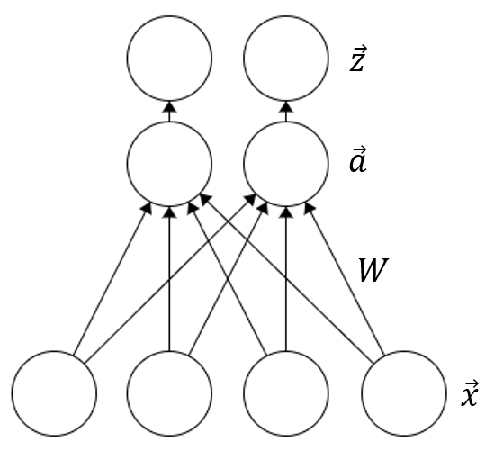
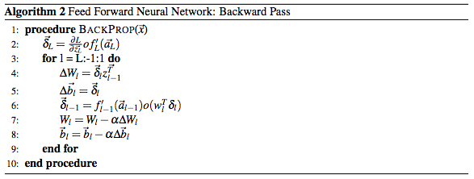

In this assignment, we will demonstrate that the back-propagation algorithm has a solid mathematical basis in gradient descent, while also being relatively simple to implement.
We begin with a simple single-layer, single-output network as demonstrated in the diagram below. This network isn't capable of much - in fact, it's identical to an ERM approach. However, it provides a useful toy example for us to get started with.
In this model, $\vec{x},\vec{W} \in \mathbb{R}^n$ and $a,z \in \mathbb{R}$. $\vec{x}$ is an input vector, $\vec{W}$ is a hidden weight vector, $a=\vec{W}^T \vec{x}$, and $z=f(a)$ for some transition function $f$. For this assignment, we'll use the logistic transition function and mean squared error loss, so: $$f(a) = z = \frac{1}{1+e^{-a}}$$ $${\cal L}(z) = \frac{1}{2}(y-z)^2$$ where ${\cal L}$ is the stochastic loss over a single input pair $(\vec{x},y)$.
(a) Using these values, prove that: $$\frac{\partial{\cal L}}{\partial\vec{W}} = -z(1-z)(y-z)\vec{x}$$
(b) Similarly, prove that: $$\frac{\partial{\cal L}}{\partial\vec{x}} = -z(1-z)(y-z)\vec{W}$$ While we don't need this result to train this particular neural network, it will become important later on.
We've successfully figured out how to train the simplest neural network known to man. We would obviously like to expand this model to more complicated networks by adding additional layers. First, however, we must adjust our model so that it can deal with multiple outputs, as shown in the diagram below.
In this model, the input $\vec{x}\in\mathbb{R}^n$, the outputs $\vec{a},\vec{z}\in\mathbb{R}^m$, and the weight matrix $\mathbf{W}\in\mathbb{R}^{m\times n}$. $\vec{z}=f(\vec{a})$, where $f$ is the sigmoid function applied elementwise. The loss is still a scalar: $${\cal L}=\sum_{i=1}^m \frac{1}{2}(\vec{y}_i-\vec{z}_i)^2$$
(a) Using your result from question 1 part (a), prove that: $$\frac{\partial{\cal L}}{\partial\mathbf{W}_{i,j}} = -\vec{z}_i(1-\vec{z}_i)(\vec{y}_i-\vec{z}_i)\vec{x}_j$$
(Hint: consider the two cases $\frac{\partial(\frac{1}{2}(y_k-z_k)^2)}{\partial\mathbf{W}_{i,j}}$ where $k=i$, and $k\neq i$. Each of these cases should reduce to a familiar value)
(b) Using your result from part (a), show that the gradient of the loss $\frac{\partial{\cal L}}{\partial\mathbf{W}}$ can be written as the matrix product of two vectors.
(c) Using your result from question 1 part (b), prove that: $$\frac{\partial{\cal L}}{\partial\vec{x}} = -\mathbf{W}^T (\vec{z}\times(1-\vec{z})\times(\vec{y}-\vec{z}))$$ where $\times$ represents elementwise multiplication. Again, while we don't need this result in order to train this particular neural network, it will become important later on.
Now we're ready to add additional layers! Our neural network now looks like this:
To make predictions, we use the following algorithm. Feel free to ignore the bias vector $\vec{b}$ - we'll just assume that each vector $\vec{z}$ includes an appended bias term:
Intuitively, it's very difficult to figure out what values the intermediate weights and nodes should take on to minimize the loss, but the algorithm for figuring this out is actually very simple. Again, we can ignore the bias vector $\vec{b}$:
Now for the final part of our proof: we'll show that the back-propagation algorithm is just a fancy version of gradient descent.
(a) Using induction, and your result from question 2 part (c), prove that for all $1\le l \le L$, the algorithm's error signal is the derivative of ${\cal L}$ w.r.t. $\vec{a}_l$, i.e. $\vec{\delta}_l = \frac{\partial{\cal L}}{\partial\vec{a}_l}$
(b) Using your results from part (a) and question 2 part (b), prove that for all $1\le l \le L$, the algorithm's update matrix $\Delta\mathbf{W}_l = \frac{\partial{\cal L}}{\partial\mathbf{W}_l}$
This shows that no matter how large or complicated our network may be, the back-propagation algorithm can perform gradient descent on a chosen loss and transition function with simple matrix multiplications. And just like gradient descent, we can introduce adagrad and regularization for better performance. It can also be efficiently implemented in under 10 lines of code!